Before fitting a chain ladder or loss-ratio model, it pays to inspect
the underlying triangle. This vignette covers the diagnostic tools in
lossratio for understanding cohort behaviour, age-to-age
factor stability, and maturity detection.
Triangle-level diagnostics
library(lossratio)
data(experience)
exp <- as_experience(experience)
tri <- build_triangle(exp, group_var = cv_nm)Cohort trajectories
plot(tri) # raw clr trajectories per cohort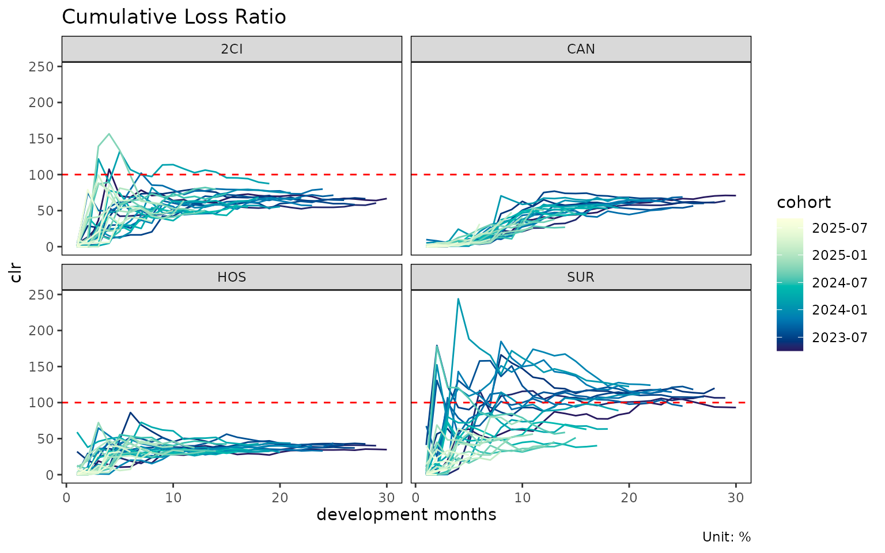
plot(tri, value_var = "loss") # cumulative loss instead of clr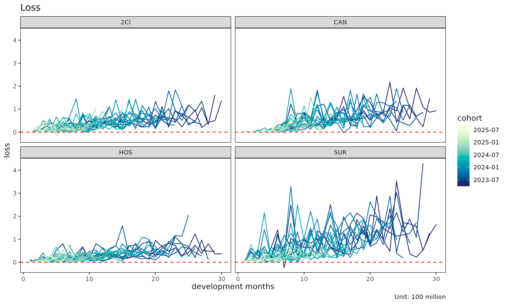
plot(tri, summary = TRUE) # raw + overlay (mean / median / weighted)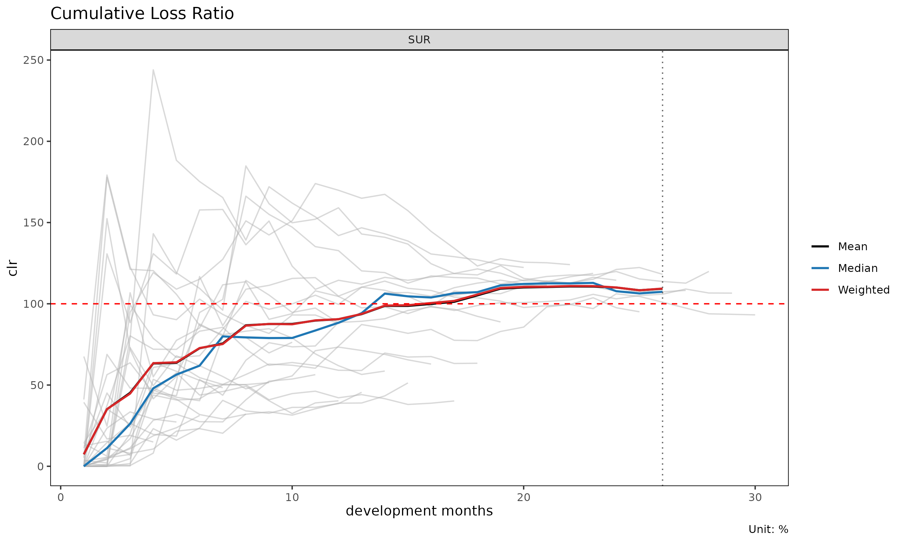
The summary = TRUE overlay computes mean, median, and
weighted clr at each dev and overlays them on the cohort lines. Useful
for spotting cohorts that deviate from the central tendency.
Cell heatmap
plot_triangle(tri) # clr in each cell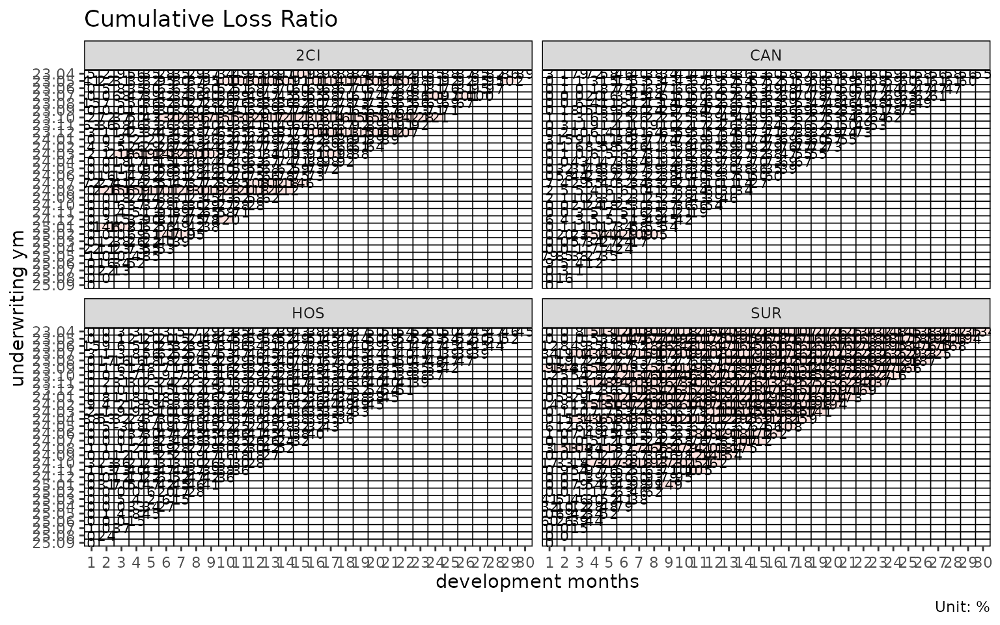
plot_triangle(tri, value_var = "loss") # cumulative loss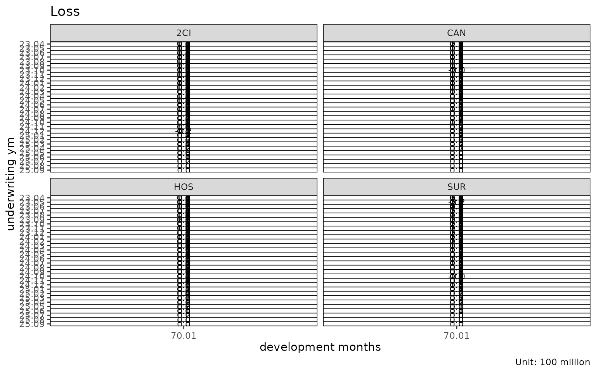
plot_triangle(tri, label_style = "detail") # ratio + (loss / rp) amounts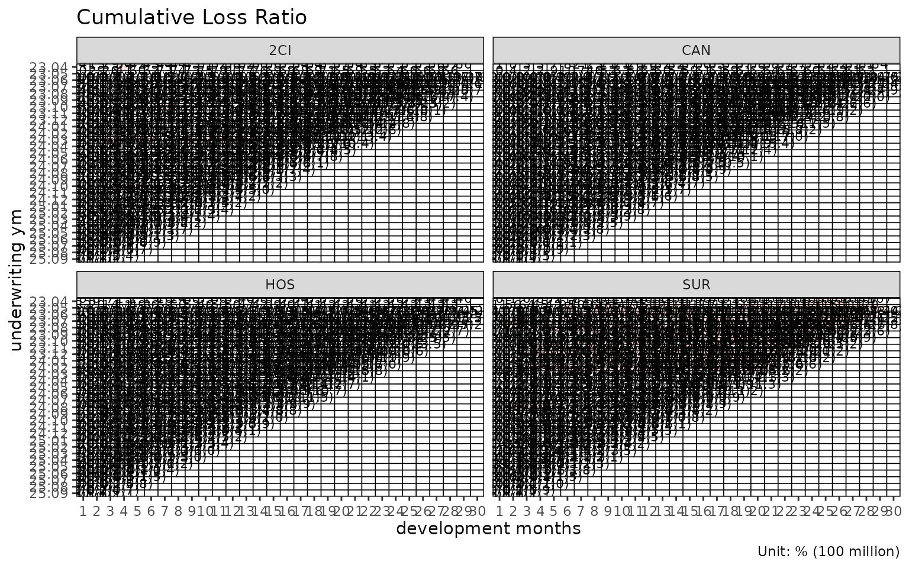
Group statistics by dev
sm <- summary(tri)
head(sm)
#> Key: <cv_nm, dev>
#> cv_nm dev n_obs lr_mean lr_median lr_wt clr_mean
#> <char> <int> <int> <num> <num> <num> <num>
#> 1: 2CI 1 30 0.07682952 0.0000684217 0.09346191 0.07682952
#> 2: 2CI 2 29 0.31682799 0.0002658639 0.37921332 0.21699608
#> 3: 2CI 3 28 0.46725413 0.1418544378 0.43601945 0.33392280
#> 4: 2CI 4 27 0.64199653 0.5374941298 0.61222448 0.45737038
#> 5: 2CI 5 26 0.64809352 0.2890663538 0.65077672 0.50492686
#> 6: 2CI 6 25 1.00328576 0.4230790053 1.05243689 0.63430163
#> clr_median clr_wt
#> <num> <num>
#> 1: 0.0000684217 0.09346191
#> 2: 0.0274751765 0.25081620
#> 3: 0.1477140322 0.33811373
#> 4: 0.3862054651 0.43323143
#> 5: 0.3658265200 0.49590320
#> 6: 0.4266323751 0.63494667Returns a triangle_summary object with mean / median /
weighted loss ratios per (group, dev) cell.
Age-to-age factor diagnostics
ata <- build_ata(tri, value_var = "closs")
sm <- summary_ata(ata, alpha = 1)
head(sm)
#> Key: <cv_nm>
#> cv_nm ata_from ata_to ata_link mean median wt cv f f_se
#> <char> <num> <num> <fctr> <num> <num> <num> <num> <num> <num>
#> 1: 2CI 1 2 1-2 34274.413 1.026 5.709 3.984 4.008 69.971
#> 2: 2CI 2 3 2-3 40.708 2.852 2.281 2.795 2.027 3.353
#> 3: 2CI 3 4 3-4 32.952 2.349 1.890 3.737 1.781 0.896
#> 4: 2CI 4 5 4-5 2.937 1.350 1.646 2.115 1.646 0.373
#> 5: 2CI 5 6 5-6 2.810 1.308 1.791 1.278 1.791 0.356
#> 6: 2CI 6 7 6-7 1.324 1.189 1.225 0.353 1.225 0.068
#> rse sigma n_obs n_valid n_inf n_nan valid_ratio
#> <num> <num> <num> <num> <num> <num> <num>
#> 1: 17.460 412335.337 29 16 0 0 0.552
#> 2: 1.655 47209.055 28 22 0 0 0.786
#> 3: 0.503 18961.582 27 26 0 0 0.963
#> 4: 0.227 10617.916 26 26 0 0 1.000
#> 5: 0.199 12597.734 25 25 0 0 1.000
#> 6: 0.056 3169.431 24 24 0 0 1.000summary_ata() computes per-link statistics that drive
maturity detection:
-
mean,median,wt— descriptive averages of observed ata factors at each link (excluding cohorts where the link is not observed). -
cv— coefficient of variation of the observed factors (relative spread, alpha-independent). -
f— WLS-estimated factor (volume-weighted byvalue_from^alpha). -
f_se,rse— WLS standard error and relative standard error. -
sigma— Mack residual sigma per link. -
n_obs,n_valid,n_inf,n_nan,valid_ratio— observation counts and the share of finite ata factors per link.
Diagnostic plots for ata
plot(ata, type = "cv") # CV vs ata link with maturity overlay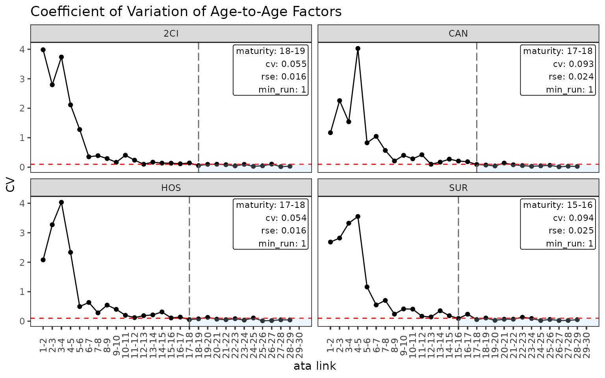
plot(ata, type = "rse") # RSE vs ata link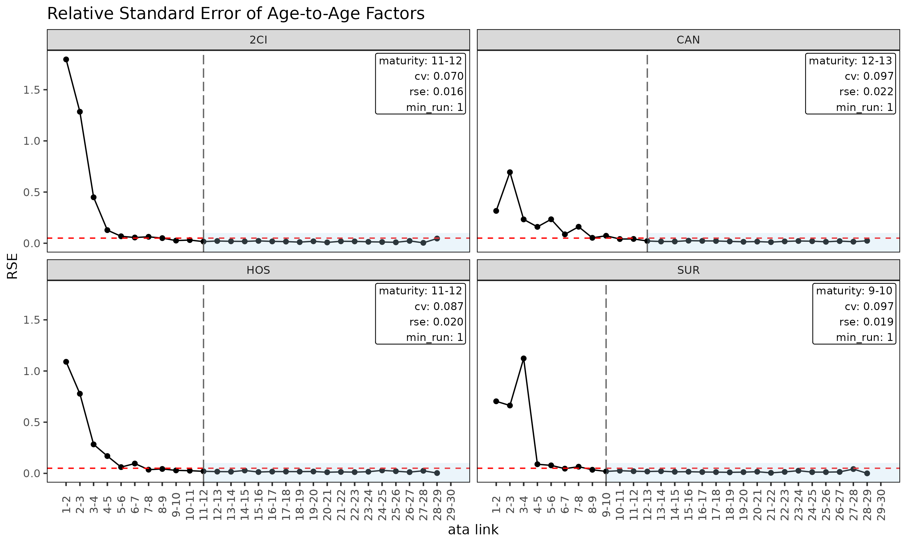
plot(ata, type = "summary") # mean / median / wt overlay per link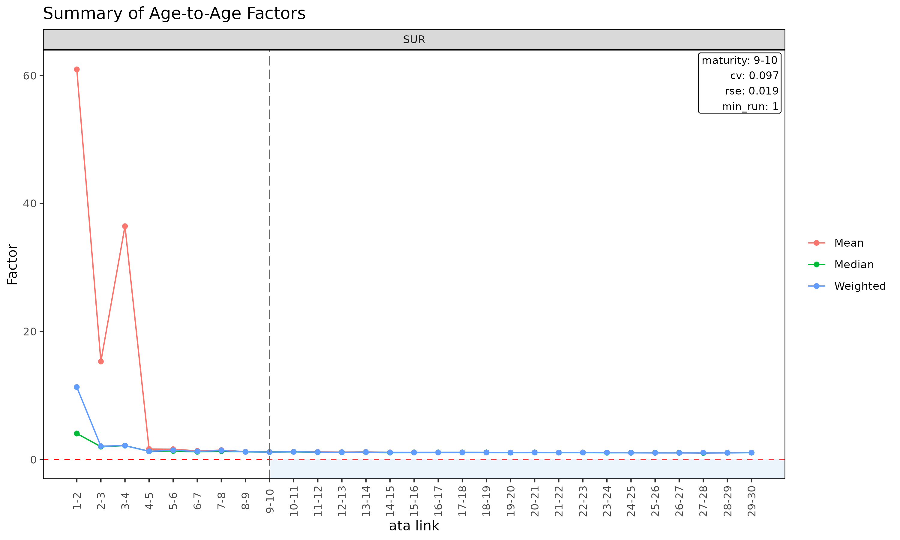
plot(ata, type = "box") # boxplot of observed ata per link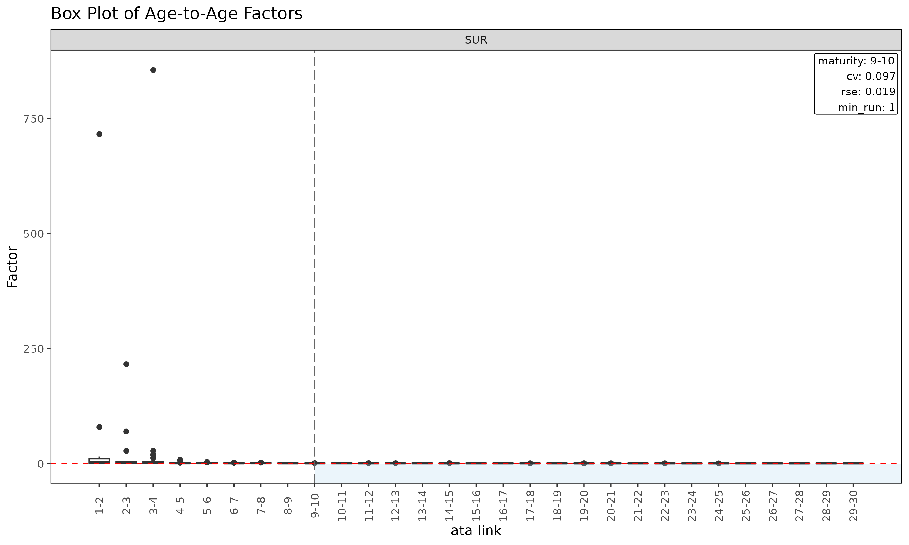
plot(ata, type = "point") # scatter of observed ata per link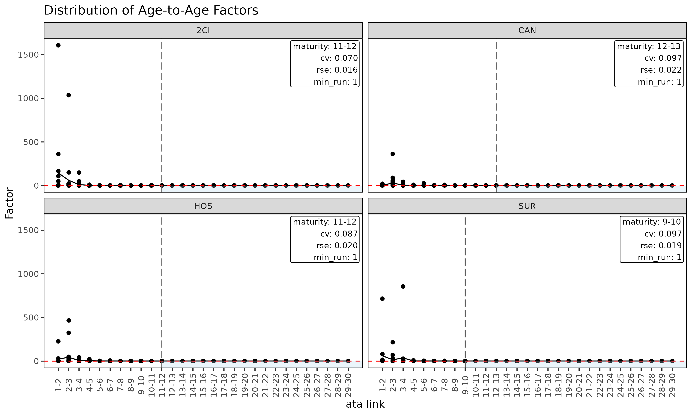
Triangle of ata factors
plot_triangle(ata) # heatmap of observed factors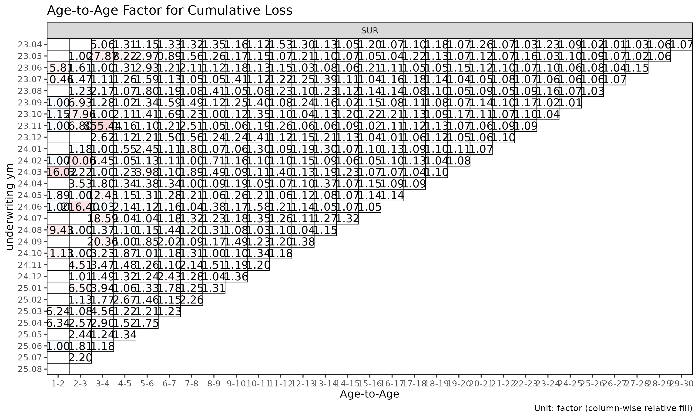
plot_triangle(ata, label_style = "detail") # factor + (loss / rp) amounts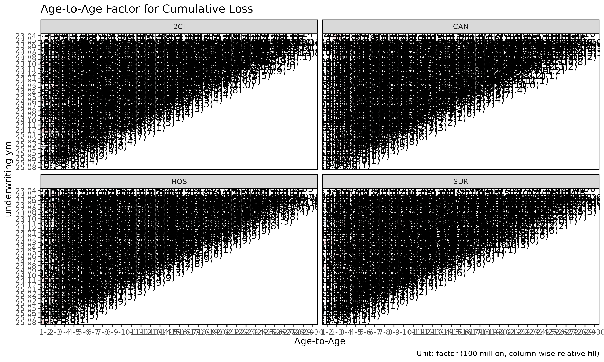
plot_triangle(ata, show_maturity = TRUE) # overlay maturity line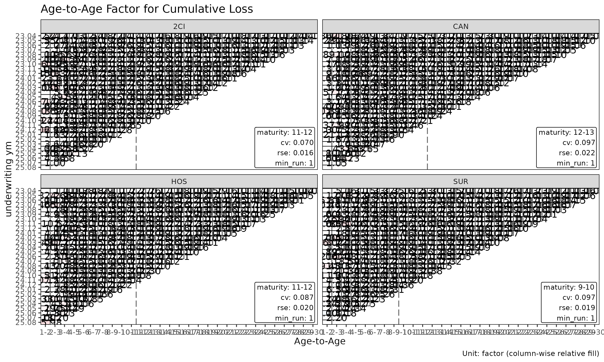
The heatmap colours each cell by log(ata / median(ata))
within its link, so column-wise colour distinguishes cohorts that
deviate from the link’s median.
Maturity detection
The maturity point is the development link beyond which age-to-age
factors are stable enough to trust for chain-ladder projection. Used
internally by fit_lr(method = "sa") to switch from ED to
CL.
find_ata_maturity() operates on a
summary_ata() object — first build the descriptive / WLS
summary, then probe it for the first mature link:
sm <- summary_ata(ata, alpha = 1)
mat <- find_ata_maturity(
sm,
cv_threshold = 0.10, # CV must be below this
rse_threshold = 0.05, # RSE must be below this
min_valid_ratio = 0.5, # at least 50% finite cohorts at the link
min_n_valid = 3L, # at least 3 finite cohorts
min_run = 1L # at least 1 consecutive mature link
)
print(mat)
#> Key: <cv_nm>
#> cv_nm ata_from ata_to ata_link mean median wt cv f f_se rse
#> <char> <num> <num> <char> <num> <num> <num> <num> <num> <num> <num>
#> 1: 2CI 18 19 18-19 1.076 1.047 1.076 0.055 1.076 0.017 0.016
#> 2: CAN 17 18 17-18 1.137 1.119 1.126 0.093 1.126 0.027 0.024
#> 3: HOS 17 18 17-18 1.107 1.092 1.101 0.054 1.101 0.018 0.016
#> 4: SUR 15 16 15-16 1.092 1.038 1.098 0.094 1.098 0.027 0.025
#> sigma n_obs n_valid n_inf n_nan valid_ratio
#> <num> <num> <num> <num> <num> <num>
#> 1: 1650.456 12 12 0 0 1
#> 2: 2473.092 13 13 0 0 1
#> 3: 1350.950 13 13 0 0 1
#> 4: 4057.711 15 15 0 0 1A row per group with the first development link satisfying all
thresholds, carrying the link’s full statistics. The threshold arguments
are also stored as attributes on the returned object.
find_ata_maturity() is also called internally by
fit_ata() and fit_cl() when
maturity_args is supplied (the alpha of the
internal summary_ata() step is taken from those
callers).
Tune the thresholds to your portfolio’s volatility profile. Tight
thresholds (e.g. cv_threshold = 0.05) push maturity later;
loose thresholds push it earlier.
ED diagnostics
ed <- build_ed(tri, loss_var = "closs", exposure_var = "crp")
sm <- summary_ed(ed, alpha = 1)
head(sm)
#> Key: <cv_nm>
#> cv_nm ata_from ata_to ata_link mean median wt cv g
#> <char> <num> <num> <fctr> <num> <num> <num> <num> <num>
#> 1: 2CI 1 2 1-2 0.43017 0.00025 0.45524 2.85861 0.45524
#> 2: 2CI 2 3 2-3 0.34713 0.13068 0.33637 2.20434 0.33637
#> 3: 2CI 3 4 3-4 0.33564 0.27159 0.30584 1.01829 0.30584
#> 4: 2CI 4 5 4-5 0.28380 0.10896 0.27756 1.39025 0.27756
#> 5: 2CI 5 6 5-6 0.38135 0.11079 0.38237 1.72311 0.38237
#> 6: 2CI 6 7 6-7 0.14598 0.10207 0.14379 1.12284 0.14379
#> g_se rse sigma n_obs n_valid n_inf n_nan valid_ratio
#> <num> <num> <num> <num> <num> <num> <num> <num>
#> 1: 0.24492 0.53801 4641.876 29 29 0 0 1
#> 2: 0.13535 0.40238 3719.065 28 28 0 0 1
#> 3: 0.06214 0.20318 2242.307 27 27 0 0 1
#> 4: 0.07533 0.27141 3266.851 26 26 0 0 1
#> 5: 0.13019 0.34048 6627.107 25 25 0 0 1
#> 6: 0.03288 0.22867 1917.319 24 24 0 0 1
plot(ed, type = "summary")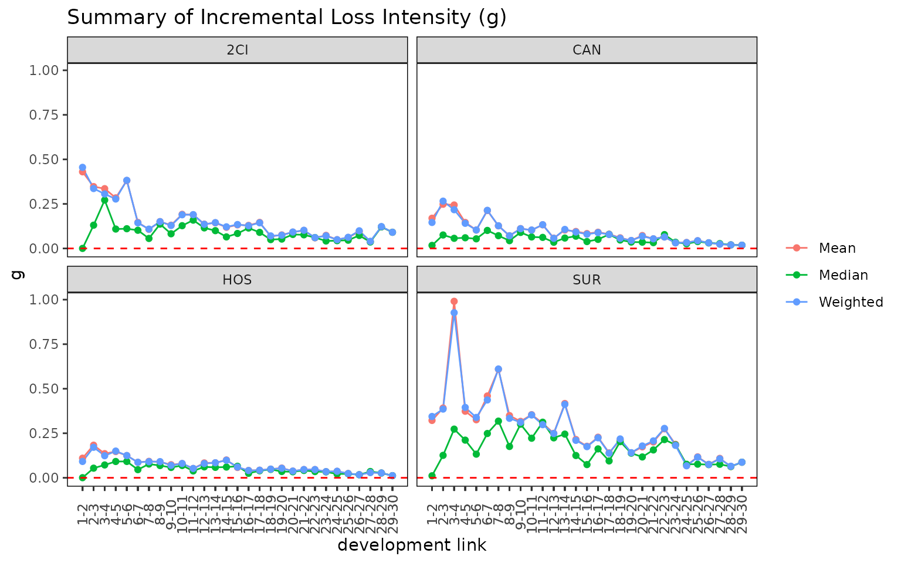
plot(ed, type = "box")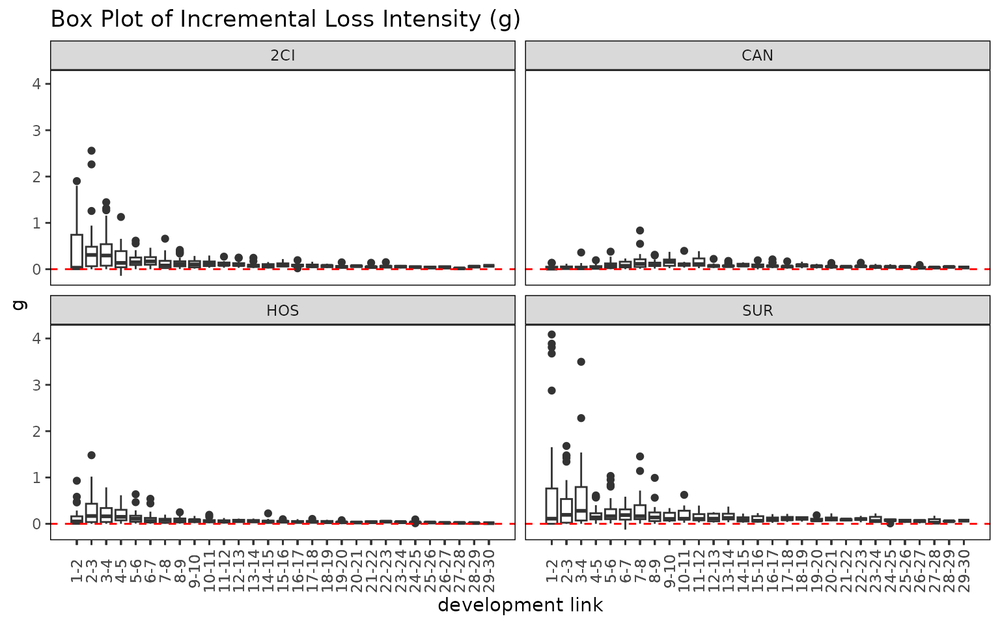
plot_triangle(ed)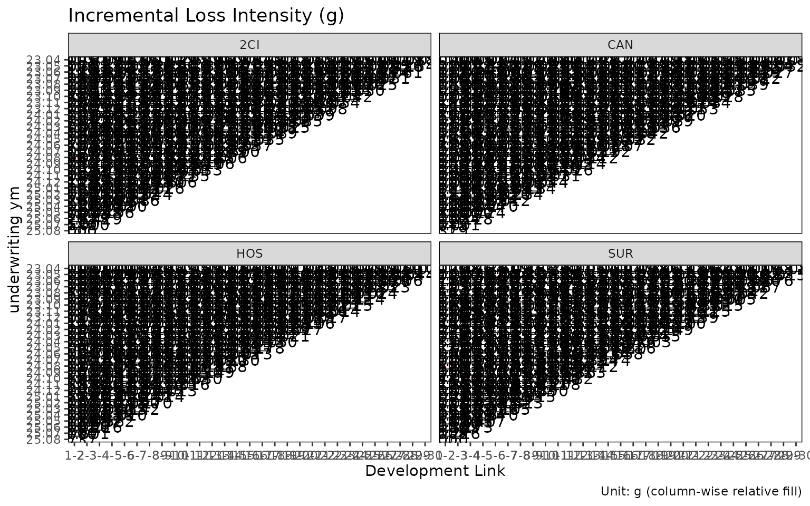
summary_ed() is the ED-side analogue of
summary_ata(), computing per-link statistics for the
intensity
.
Validation before building
If gaps in the development sequence are suspected, inspect them
before build_triangle():
gaps <- validate_triangle(exp, group_var = cv_nm,
cohort_var = "uym", dev_var = "elap_m")
head(gaps)
#> Empty data.table (0 rows and 5 cols): cv_nm,uym,n_observed,n_expected,missingReturns a triangle_validation object with one row per
cohort that has non-consecutive development periods. An empty result
means the triangle is clean.
If gaps exist, options:
- Fix the data source (preferred).
- Drop offending cohorts.
- Pass
fill_gaps = TRUEtobuild_triangle()to zero-fill missing cells (use with care — inflatesn_obs).
Recent-diagonal subset
When older cohorts are no longer representative (rate change, reserving regime shift), restrict estimation to the recent calendar diagonals:
fit_ata(ata, alpha = 1, recent = 12) # last 12 calendar diagonals
#> <ata_fit>
#> alpha : 1
#> sigma_method: min_last2
#> recent : 12
#> use_maturity: FALSE
#> groups : cv_nm
#> n_groups : 4
#> ata links : 116
fit_cl(tri, value_var = "closs", recent = 12)
#> <cl_fit>
#> method : basic
#> value_var : closs
#> weight_var : none
#> alpha : 1
#> recent : 12
#> use_maturity: FALSE
#> tail_factor : 1
#> groups : cv_nm
#> periods : 30
fit_lr(tri, recent = 12)
#> <lr_fit>
#> method : sa
#> loss_var : closs
#> exposure_var : crp
#> loss_alpha : 1
#> exposure_alpha: 1
#> delta_method : simple
#> conf_level : 0.95
#> ci_type : analytical
#> sigma_method : min_last2
#> recent : 12
#> maturity[2CI] : 18
#> maturity[CAN] : 18
#> maturity[HOS] : 18
#> maturity[SUR] : 19
#> groups : cv_nm
#> periods : 120recent = K keeps only rows whose calendar position
(rank(cohort) + dev - 1) is among the latest K
per group.
Workflow checklist
Before fitting:
-
validate_triangle()— schema and gap check. -
build_triangle()— canonical shape with derived columns. -
plot(tri)/plot_triangle(tri)— visual inspection. -
summary(tri)— group-level central tendency. -
build_ata()+plot(ata, type = "cv")— link stability. -
find_ata_maturity()— verify maturity detection produces a sensible point per group. -
detect_cohort_regime()(optional) — structural change diagnosis.
Then fit fit_lr() / fit_cl() with
confidence in the input data.
See also
-
vignette("getting-started")— full pipeline overview. -
vignette("regime-detection")—detect_cohort_regime()deep dive. -
vignette("loss-ratio-methods")— projection method choice.